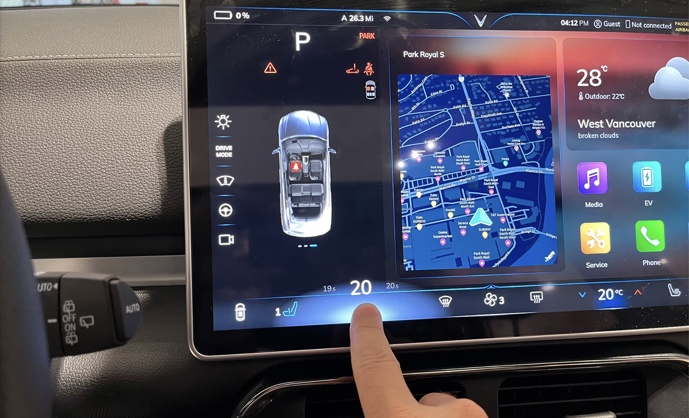
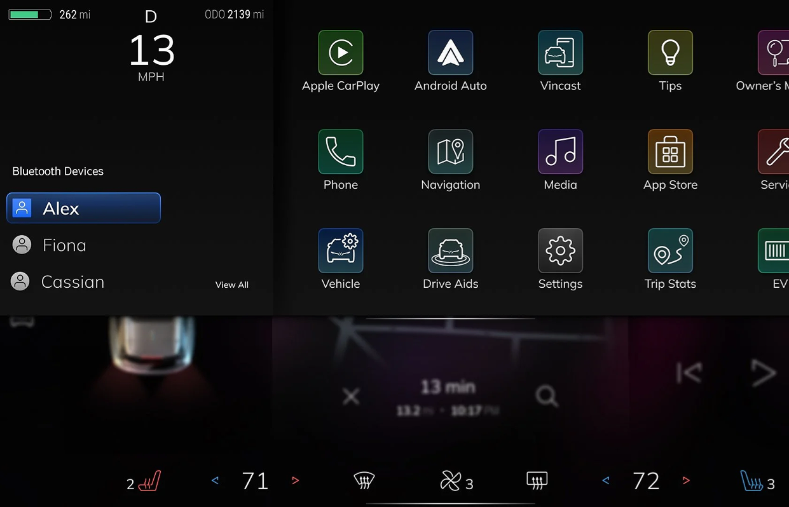
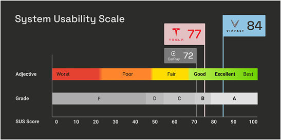

Back to All Work
Leading Interaction Architecture for an Electric Vehicle Lineup
Focus: Automotive IVI | Interaction Architecture | Innovation Strategy
Vinfast — Vietnam's first Automotive OEM — is releasing its first flagship electric vehicle. We are tasked with designing its entire IVI (in-vehicle infotainment system) from the ground up.
Processes: mindmapping, wireframes, prototypes, animation
Since the client requested a Tesla-like, "minimal physical button" interface, I prioritized minimizing driver distraction.

When a car has no physical knobs, how do we emulate the tactile speed and accuracy on a touchscreen? I developed a high-velocity swipe model allowing for massive temperature shifts in a single, glanceable action.
Participants were able to complete the task in 1.2s avg. eye open time with occlusion goggles.

While competitors treat Bluetooth device switching as a secondary "parked" task, we optimized it into a 2-tap flow, recognizing it as a frequent real-world need for families.
Efficiency as Safety: Identifying "edge case" workflows that are actually daily habits.


Cognitive Load & Occlusion: All designs were vetted through occlusion goggle testing to ensure secondary tasks did not interfere with the primary task of driving.